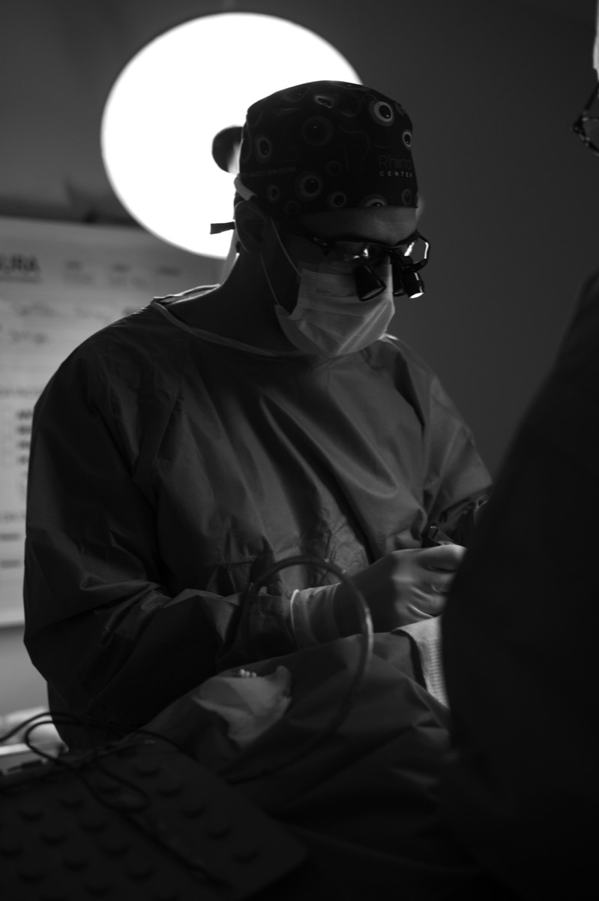
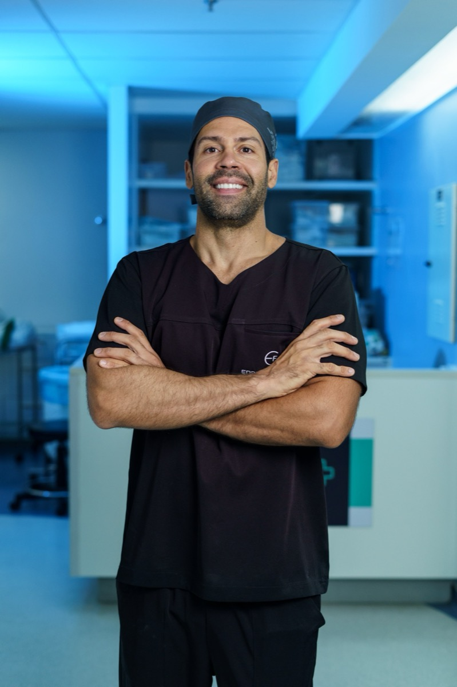

Otorrinolaringologista formado pela USP, com Fellowship em Cirurgia Plástica Facial pela mesma instituição. Mais de 2.000 rinoplastias em pacientes de 19 países.


A rinoplastia está entre as cirurgias mais técnicas e delicadas da medicina estética. Milímetros separam o natural do artificial — e decidem se o seu nariz continuará respirando bem pelas próximas décadas.
É por isso que o Dr. Edson Freitas fez uma escolha rara: dedicar a trajetória inteira a uma única cirurgia — e dominá-la por completo.
Rinoplastia, ano após ano, até o gesto se tornar assinatura.
Cada nariz é concebido como peça única, para um único rosto.
Nada de catálogo. O seu nariz, em sua melhor versão.
Forma e função, refinadas no mesmo gesto cirúrgico.
A técnica é planejada para minimizar cicatrizes; na rinoplastia fechada não há cicatriz externa. A indicação de técnica é definida em consulta, conforme a sua anatomia e objetivos.
O desconforto é geralmente controlado com medicação comum. A maior parte das pessoas retoma atividades leves nos primeiros dias, seguindo as orientações individuais.
O resultado é duradouro; o edema final diminui gradualmente ao longo dos meses. O acompanhamento segue até a consolidação completa.
Sim — forma e função são avaliadas juntas. Muitos pacientes buscam a rinoplastia justamente por obstrução nasal, e a avaliação clínica define a conduta.
Av. Antônio Carlos Magalhães, 585
Ed. Louis Pasteur · Complexo Odonto-Médico
Pituba · Salvador · BA · 41800-700
Atendimento em dias de semana, com agenda definida na consulta.
Agende sua avaliação e entenda o que a rinoplastia pode fazer por você.
Falar no WhatsApp · (71) 99610-1799